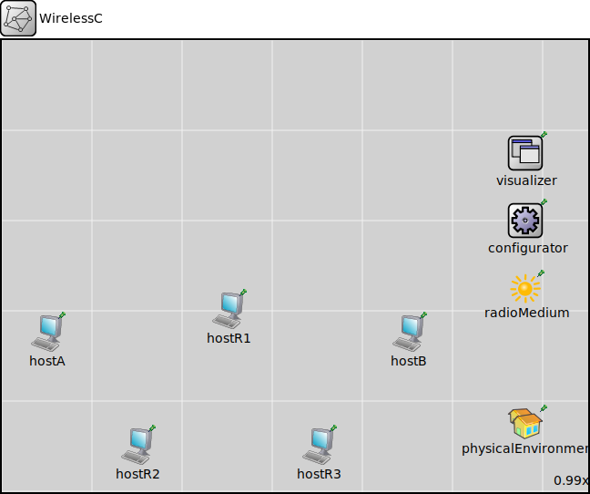

Package: inet.tutorials.wireless
WirelessC
network(no description)
Usage diagram
The following diagram shows usage relationships between types. Unresolved types are missing from the diagram.
Inheritance diagram
The following diagram shows inheritance relationships for this type. Unresolved types are missing from the diagram.
Extends
| Name | Type | Description |
|---|---|---|
| WirelessB | network | (no description) |
Properties
| Name | Value | Description |
|---|---|---|
| isNetwork | ||
| display | bgb=650,500;bgg=100,1,grey95 |
Statistics
| Name | Title | Source | Record | Unit | Interpolation Mode |
|---|---|---|---|---|---|
| packetReceived | hostB.app[0].packetReceived | figure(count) |
Unassigned submodule parameters
| Name | Type | Default value | Description |
|---|---|---|---|
| configurator.minLinkWeight | double | 1E-3 | |
| configurator.configureIsolatedNetworksSeparatly | bool | false | |
| configurator.config | xml | xml(" |
XML configuration parameters for IP address assignment and adding manual routes |
| configurator.assignAddresses | bool | true |
assign IP addresses to all interfaces in the network |
| configurator.assignUniqueAddresses | bool | true |
avoid using the same address and raise an error if not possible |
| configurator.assignDisjunctSubnetAddresses | bool | true |
avoid using the same address prefix and netmask on different links when assigning IP addresses to interfaces |
| configurator.addStaticRoutes | bool | true |
add static routes to the routing tables of all nodes to route to all destination interfaces (only where applicable; turn off when config file contains manual routes) |
| configurator.addDefaultRoutes | bool | true |
add default routes if all routes from a source node go through the same gateway (used only if addStaticRoutes is true) |
| configurator.addSubnetRoutes | bool | true |
add subnet routes instead of destination interface routes (only where applicable; used only if addStaticRoutes is true) |
| configurator.addDirectRoutes | bool | true |
add direct routes (i.e. directly connected interfaces) to the routing table (used only if addStaticRoutes is true) |
| configurator.optimizeRoutes | bool | true |
optimize routing tables by merging routes, the resulting routing table might route more packets than the original (used only if addStaticRoutes is true) |
| configurator.dumpTopology | bool | false |
print extracted network topology to the module output |
| configurator.dumpLinks | bool | false |
print recognized network links to the module output |
| configurator.dumpAddresses | bool | false |
print assigned IP addresses for all interfaces to the module output |
| configurator.dumpRoutes | bool | false |
print configured and optimized routing tables for all nodes to the module output |
| configurator.dumpConfig | string | "" |
write configuration into the given config file that can be fed back to speed up subsequent runs (network configurations) |
Source code
network WirelessC extends WirelessB { submodules: physicalEnvironment: PhysicalEnvironment { @display("p=580,425"); } }File: tutorials/wireless/WirelessC.ned
 This documentation is released under the Creative Commons license
This documentation is released under the Creative Commons license